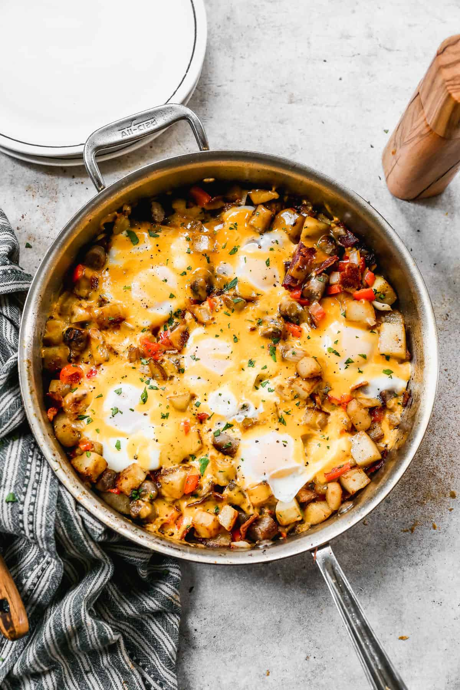

Breakfast Skillet

A Classic and Easy Breakfast Meal
A breakfast skillet is hearty and simple, and allows the addition of any available ingredients on hand. It only takes about a half an hour to prepare, and can also be an easy solution to meal-prepping.
Ingredients
- 8-10 slices bacon, chopped
- 8 breakfast sausage links
- 1 small onion, diced
- 1 red bell pepper, diced
- 3 cloves garlic, minced
- 2 large potatoes, peeled and diced
- salt and pepper to taste
- one fourth teaspoon smoked paprika
- 6 large eggs
- 1 cup shredded cheddar cheese, or favorite cheese
- 2 green onions, chopped (garnish)
- salsa (optional)
Steps
- Add sausage links to a 12’’ skillet and cook over medium heat, stirring occasionally, until browned and cooked through. Remove to a paper towel lined plate. Add bacon to the pan and cook until crisp, stirring occasionally. Remove bacon to the plate, leaving 3-4 Tablespoons grease in the pan (add a little oil or butter if there's not enough grease).
- Add potatoes to the pan in a single layer and season well with salt and pepper. Cook, flipping only occasionally, until crisp on all sides, and fork tender (around 8-10 minutes, or less if using frozen diced hash browns). Push potatoes off to the side of the pan and add onion, bell pepper and garlic. Sauté for about 3 more minutes.
- Chop the sausage into bite sized pieces and add both sausage and bacon back to the pan. Sprinkle with smoked paprika.
- Use a wooden spoon to make 6 wells in the pan to crack eggs in to. Crack the eggs into each well and sprinkle them with a little salt and pepper. Sprinkle shredded cheese evenly over everything.
-
Cover pan with a lid and cook over low heat for a few minutes until egg whites are set and cheese is melted. Garnish with green onion and serve with red or green salsa and hot sauce.
Home